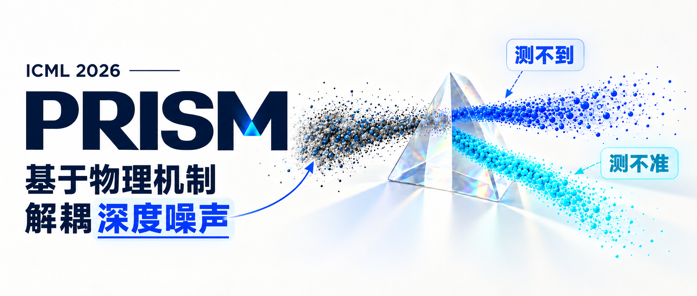
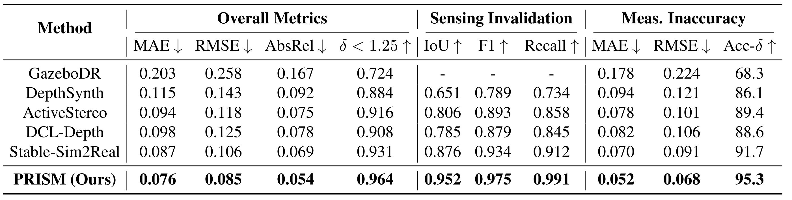
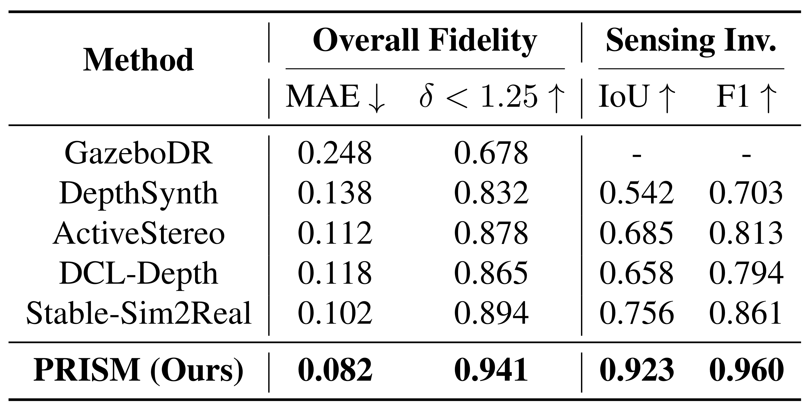
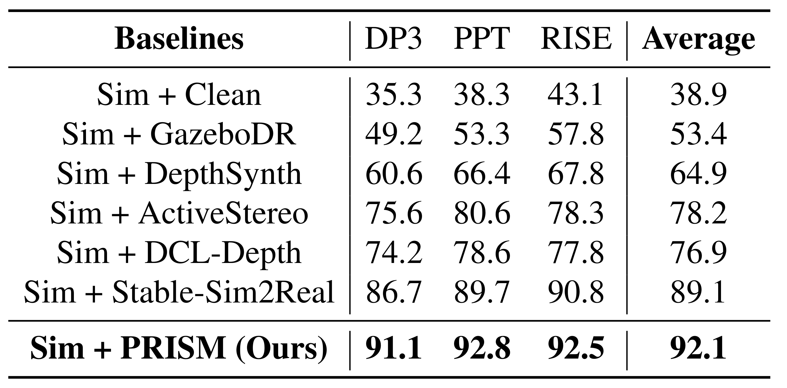
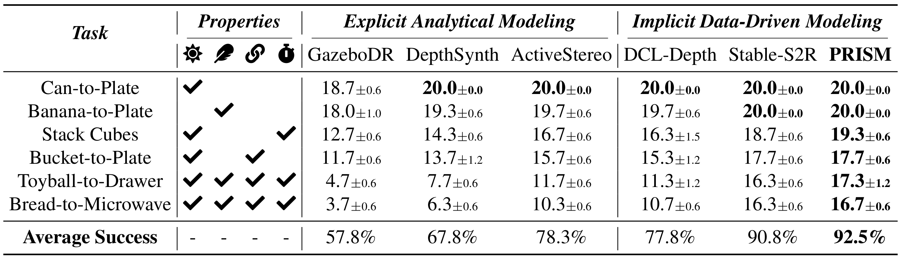
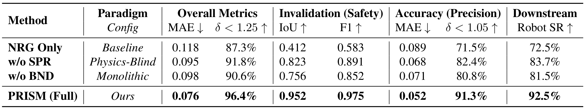
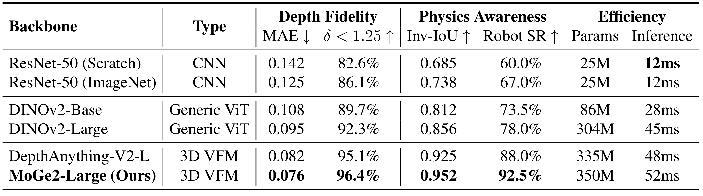
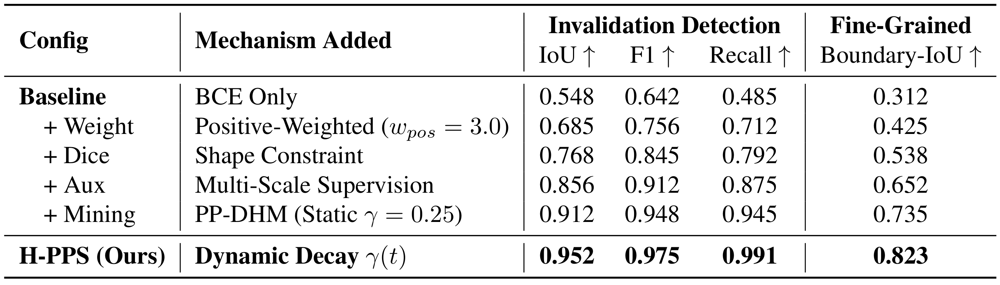

01 / DISENTANGLEMENT
Two complementary modalities
Separate sensing invalidation from measurement inaccuracy, so missing depth and noisy depth receive different treatments.

PRISM: Learning Realistic Depth via Physics-Grounded Noise Disentanglement with Semantic-Geometric Collaboration
Real-world physical sensing exhibits complex, heterogeneous noise patterns that deviate significantly from idealized simulation, posing a fundamental bottleneck for sim-to-real transfer. Existing sensor modelings typically treat depth noise as a monolithic black-box process, overlooking the distinct physical mechanisms that govern different error modalities. In this work, we introduce a physics-grounded paradigm that disentangles monolithic noise into two complementary modalities: sensing invalidation and measurement inaccuracy, enabling a tailored treatment of noise sources based on their physical origins. Building on this insight, we propose PRISM, a tripartite framework that distills 3D Visual Foundation Model features as rich spatial-semantic priors for physics-based reasoning. To address the inherent sparsity and class imbalance of invalidation regions, we develop Hierarchical Positive-Prioritized Supervision, integrating multi-scale positive-weighted objectives with a positive-preserving dynamic hard mining strategy to enforce precise artifact delineation. Extensive benchmarks demonstrate that PRISM achieves state-of-the-art fidelity in noisy depth synthesis. Furthermore, downstream robotic experiments show that PRISM facilitates a 92.1% average success rate in the real world, marking a significant improvement over monolithic baselines.
Physics-grounded decomposition connects realistic depth synthesis with embodied manipulation learning.
Separate sensing invalidation from measurement inaccuracy, so missing depth and noisy depth receive different treatments.
Bring 3D visual foundation model priors together with simulated geometry to locate and synthesize scene-dependent artifacts.
Generate realistic depth before policy training, so manipulation policies learn from sensor artifacts without requiring PRISM at deployment.

A frozen 3D visual foundation model provides spatial-semantic features. Global context and multi-scale attention turn those features into priors for sensor degradation.
Combining RGB semantics and ideal depth geometry, BND predicts the invalidation mask with supervision designed for sparse positives.
Conditional diffusion uses simulated geometry and SPR context to synthesize continuous residuals. Mask-aware supervision focuses residual learning on valid sensing regions.
On ByteCameraDepth, PRISM improves both overall synthesis fidelity and the localization of invalid sensor measurements.



Appendix · Figures 10–14
Qualitative results across Kitchen, Living Room, Market, Office and Lounge compare ideal depth, predicted and reference noise components, and synthesized depth.

PRISM enhances the training data offline, enabling zero-shot deployment without a PRISM module at policy inference time.

Across DP3, PPT and RISE, PRISM reaches 92.1% average success on six real-world tasks, compared with 38.9% for clean simulated depth and 89.1% for Stable-Sim2Real.
The gain over clean depth is 53.2 percentage points. With the RISE policy alone, the six-task average is 92.5%.


Component, backbone and supervision studies connect the modeling choices to depth synthesis and real-world manipulation performance.



Appendix · Figure 9
Real-world workspaces and their simulation counterparts provide the setting for data generation, policy learning and physical evaluation.

Precision manipulation of cans, bananas and stacked cubes.
Articulated interactions involving a bucket handle, drawer and microwave.
RealSense D435 RGB-D perception · Geometrically aligned simulation environments.
Appendix · Figures 15–20
Six real-world tasks evaluate grasping, placement and multi-stage articulated interaction on Franka Research 3 and Realman RM75.
Pick up the metallic can and place it upright on the plate.
Sensing challenge. Reflective surfaces create missing depth, requiring robust inference from fragmented boundaries.

The current model still needs stronger generalization across sensor families, and per-frame synthesis does not explicitly enforce temporal noise consistency. Interaction-induced noise and extreme optical conditions also remain directions for further study.
Extensions for cross-sensor generalization and temporal noise consistency are underway. The project code will be released in the future.
@inproceedings{liang2026prism,
title = {{PRISM}: Learning Realistic Depth via Physics-Grounded Noise Disentanglement with Semantic-Geometric Collaboration},
author = {Liang, Xiujian and Liu, Jiacheng and Sun, Mingyang and He, Qichen and Cheng, Anda and Lu, Cewu and Sun, Jianhua},
booktitle = {Proceedings of the 43rd International Conference on Machine Learning},
series = {Proceedings of Machine Learning Research},
volume = {306},
pages = {73301--73335},
year = {2026},
publisher = {PMLR},
url = {https://proceedings.mlr.press/v306/liang26n.html}
}